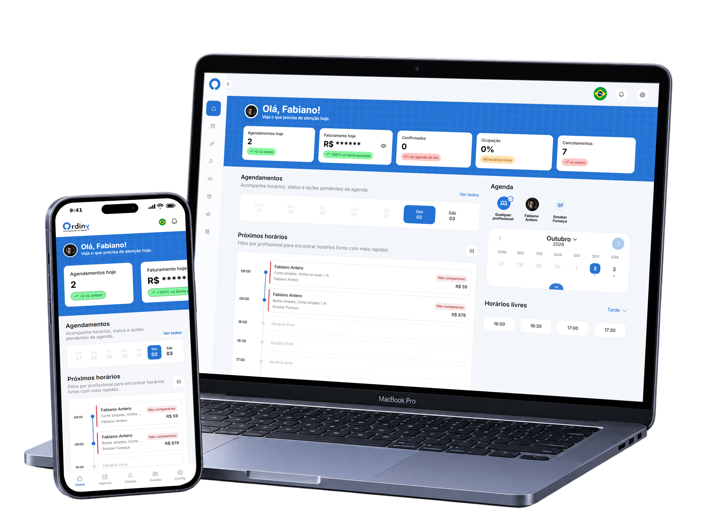
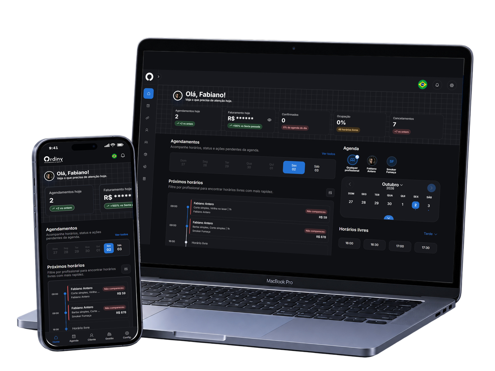
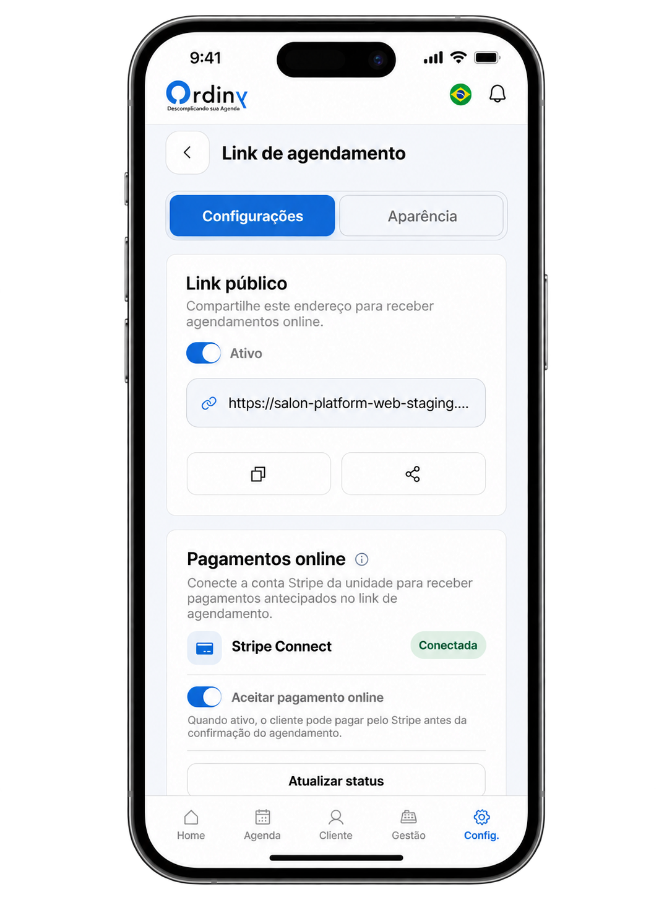
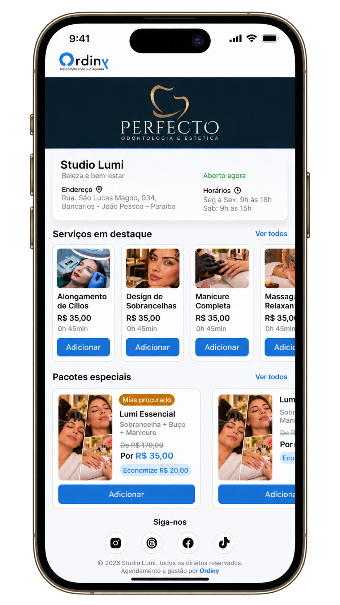
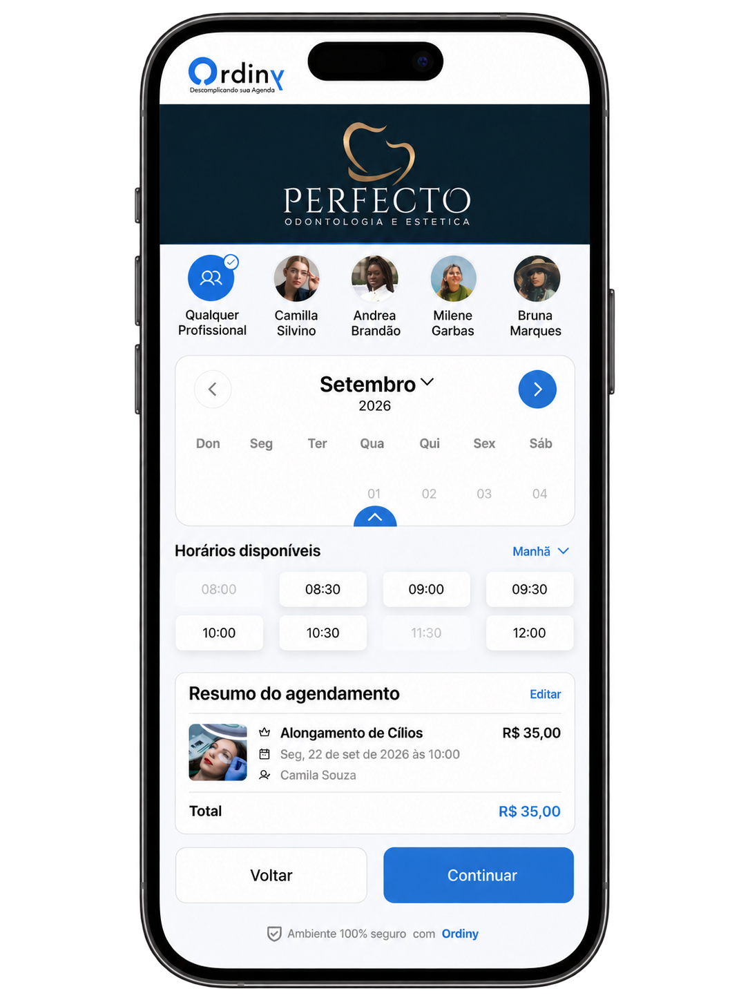
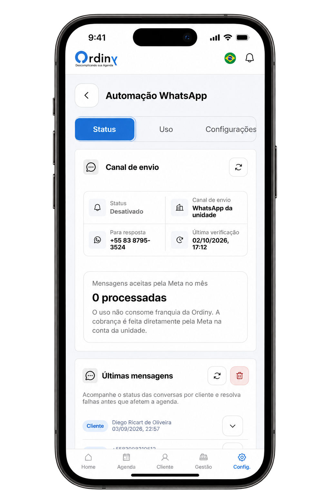

CONTEXTO
Serviços agendados
Estabelecimentos, profissionais e clientes finais.
PROJETO PESSOAL / SAAS / EM DESENVOLVIMENTO
Projetei e desenvolvi um SaaS que conecta o agendamento do cliente à rotina do estabelecimento. Da escolha do serviço ao atendimento, as etapas compartilham as mesmas regras.
Abrir a Ordiny ↗CONTEXTO
Estabelecimentos, profissionais e clientes finais.
MEU PAPEL
UX/UI, front-end, back-end, arquitetura e infraestrutura.
ENTREGA
Da captação à reserva, ao atendimento e ao relacionamento.
01 / CONTEXTO
Conversas precisavam ser registradas manualmente, reagendamentos exigiam novas verificações de disponibilidade e pagamentos precisavam ser vinculados aos atendimentos. A continuidade dependia de trabalho manual.
Conectar reserva, atendimento e pagamento para reduzir registros repetidos e prevenir conflitos na agenda.
O cliente precisa encontrar e reservar o serviço. O estabelecimento precisa cumprir a reserva e acompanhar a operação, inclusive entre unidades.
02 / JORNADA
A jornada conecta o agendamento feito pelo cliente à realização do atendimento pela unidade.
01 / ENTRAR
Site, planos, cadastro e confirmação por e-mail. Avaliação gratuita por 15 dias.
02 / PREPARAR
A configuração dos serviços, dos profissionais e da disponibilidade define as opções do link público e das integrações.
03 / RESERVAR
Link público ou WhatsApp. Serviço, profissional e horário validados na confirmação.
04 / ACOMPANHAR
A reserva entra na agenda, nas notificações e nos registros da operação.
Mapa explicativo do produto; os fluxos abaixo aprofundam suas regras.
03 / OPERAÇÃO
Organizei a operação por responsabilidade: proprietário, recepção e profissionais. O cliente agenda pelos canais públicos.
FRENTES DA OPERAÇÃO
Disponibilidade, status, reagendamentos e cancelamentos.
Contato, consentimento, serviços e pacotes.
Registros financeiros, regras, integrações e aparência.


Ambiente separado para administrar clientes da plataforma, planos e ocorrências.
Perfis orientam as ações visíveis; a API verifica a permissão em cada operação.
04 / RESERVA
A unidade prepara sua vitrine; o cliente escolhe serviços e pacotes e segue para a reserva. A personalização mantém a identidade de cada estabelecimento.
DA CONFIGURAÇÃO DA UNIDADE À ESCOLHA DO CLIENTE
02 / PREPARAR A UNIDADE

03 / ENCONTRAR O SERVIÇO

04 / ESCOLHER O HORÁRIO

TELAS DO PROJETO NO FIGMA / DADOS ILUSTRATIVOS
DECISÃO / CONTINUIDADE
DESAFIO
Reservas com serviços e pacotes precisam considerar a duração total, o valor e os profissionais habilitados.
ESCOLHA
Painel, link público e WhatsApp usam as mesmas regras de disponibilidade. A reserva é revalidada na confirmação.
CUIDADO DE PRODUTO
Um horário disponível pode ser reservado por outra pessoa antes da confirmação. A opção “Qualquer profissional” considera a habilitação para o serviço e a distribuição dos atendimentos.
05 / PAGAMENTOS
A assinatura da plataforma e o pagamento do atendimento têm destinatários e responsabilidades próprios.
USO DO SAAS
A assinatura define recursos e limites do plano.
PAGAMENTO DO ATENDIMENTO
Conta Stripe da própria unidade, sem comissão da Ordiny.
O pagamento online é realizado no checkout do provedor, com os meios de pagamento disponíveis.
A unidade responde por taxas, reembolsos e contestações. Referências e histórico evitam registros duplicados.
06 / CONVERSAS
Cada unidade usa seu próprio número do WhatsApp Business. O chatbot conduz o agendamento; lembretes e ações para retomar o contato com clientes têm controles próprios.
DECISÃO / AUTOMAÇÃO
DESAFIO
O cliente pode precisar de ajuda fora do roteiro.
ESCOLHA
Quando o cliente pede um atendente, o sistema avisa os operadores autorizados e pausa a automação da conversa. Desativar os lembretes mantém o chatbot ativo.
CUIDADO DE PRODUTO
O atendimento humano termina manualmente ou após 30 minutos sem atividade do cliente.
O recurso depende de contratação, consentimento do cliente, critérios de elegibilidade, intervalo entre contatos e um modelo de mensagem de marketing aprovado.
Os registros distinguem aceitação pela Meta, entrega e falha.
05 / CONTROLES DO WHATSAPP

TELA DE DESIGN / DADOS ILUSTRATIVOS
07 / LEITURA COMPLEMENTAR
As escolhas de construção apoiam a consistência da interface e a confiabilidade das operações.
INTERFACE
React + TypeScript no Cloudflare Pages. Componentes compartilhados para desktop, mobile e PWA; temas de unidade e BackOffice separados.
REGRAS E COORDENAÇÃO
Workers + Hono validam regras; D1 armazena dados; Durable Objects coordenam operações críticas.
TRABALHO EM SEGUNDO PLANO
Queues e tarefas agendadas processam atividades; R2 guarda imagens; KV apoia configurações.
As datas já consultadas são carregadas do cache e atualizadas em segundo plano. A confirmação continua verificando a disponibilidade atual.
Isolamento entre contas e unidades, permissões, validações, auditoria e verificação de webhooks.
Ações sensíveis pedem confirmação adicional; imagens são validadas e reprocessadas.
08 / ENTREGA
A jornada está implementada em ambiente de homologação. O projeto continua em desenvolvimento; os benefícios abaixo ainda precisam ser avaliados em uso real.
OBJETIVOS DO PRODUTO / SEM RESULTADOS COMERCIAIS MENSURADOS
Reduzir registros repetidos entre conversa, reserva, atendimento e pagamento.
Tornar agenda, responsabilidades e relacionamento mais fáceis de acompanhar.
Próximo passo: observar clientes e operadores usando a jornada, concluir a homologação e medir o efeito na rotina.
Abrir a Ordiny ↗